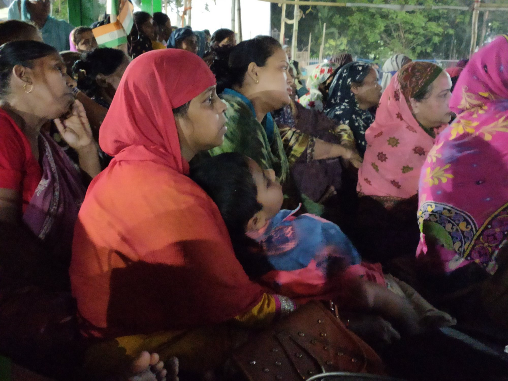

Open-air film screening at Park Circus Maidan
It was electric to screen films at the women-led sit-in venue at Park Circus today. It became hard to distinguish the screen from the audience, the reel from real. We watched all the films we had listed out - the 30 minute excerpt (In the name of Cow) from Anand Patwardhan's 'Reason', 'Tribute to Shaheen Bagh' by Gitanjali Rao (this had to be screened twice on popular interest!), 'Nooreh' by Ashish Pandey, 'Memoirs of Saira and Salim' by Eshwarya Grover, and 'Two and Two' by Babak Anvari. And ever so often, as the screen erupted, the audience erupted in resonance. After all this, and quite a bit of talking with each other about how we felt watching them, we also had time to watch a 15-minute excerpt from Subasri Krishnan's 'What the Fields Remember'.

There were tears, smiles, rage, love, warmth, emotions and camaraderie, all indistinguishable from each other.
Cheers to the young team who invited us for this, it was memorable, every minute of it.
Photograhy: Duttatreya, Shreyatama, Dilip